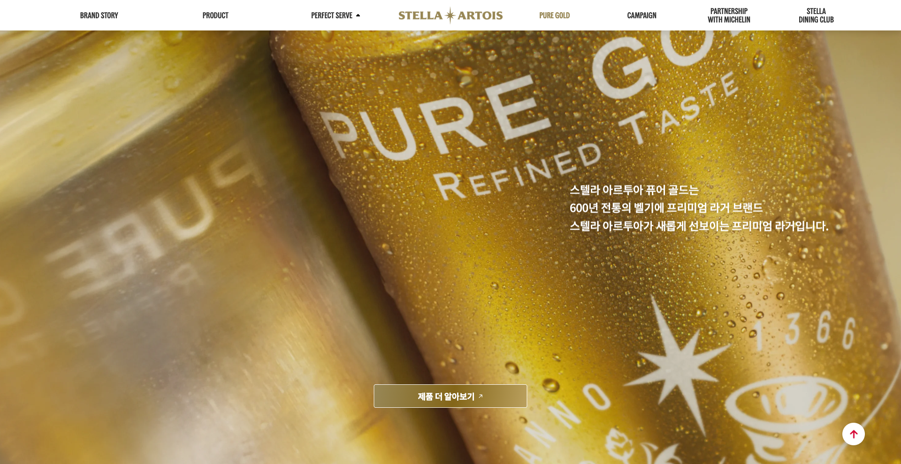
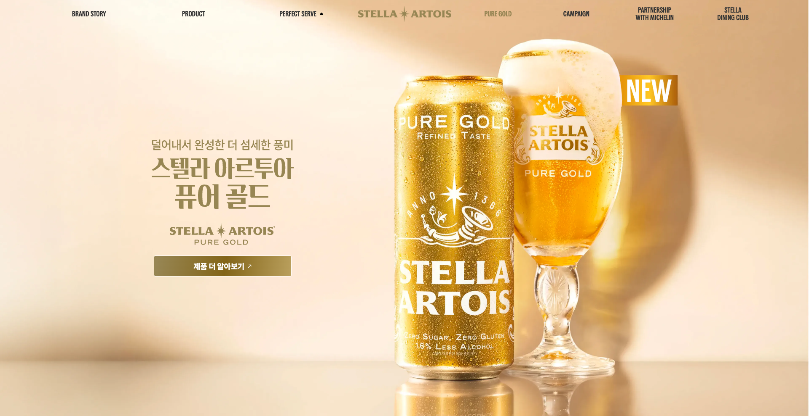
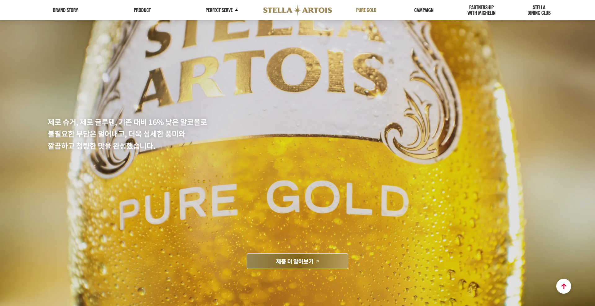
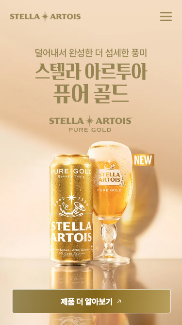

① 캔 배경 + 첫 번째 문구
섹션에 진입하면 캔 클로즈업 배경이 고정되고, 오른쪽에 브랜드 소개 문구가 떠오릅니다.
스텔라 아르투아 퓨어 골드 출시에 맞춰 운영 중인 스텔라 아르투아 홈페이지에 Pure Gold 메뉴를 추가하고, 신제품 소개 페이지를 신규 제작하였습니다. 스크롤에 따라 배경이 캔에서 잔으로 전환되는 인터랙션을 구현하는 데 가장 많은 공을 들였습니다.

기존 홈페이지 헤더 메뉴 구성 안에 Pure Gold 메뉴를 추가하여 신제품 페이지로 연결하였습니다.
비주얼 → 브랜드 스토리 → 제품 특징 → 프리미엄 패키지로 이어지는 페이지를 신규 퍼블리싱하였습니다.
배경을 화면에 고정한 채 스크롤에 따라 캔에서 잔으로 전환하고, 문구가 순서대로 떠오르도록 구현하였습니다.
신제품 출시에 맞춰 스텔라 아르투아 매장 찾기 지도에 퓨어 골드 판매 매장 마커를 표시하고, 이를 관리자페이지에서 추가·관리할 수 있도록 할 예정입니다.
브랜드 스토리 구간은 배경이 화면에 고정된 상태에서 스크롤에 따라 캔 클로즈업에서 잔 클로즈업으로 바뀌고, 그 위로 문구가 차례대로 떠오르는 구조입니다. 스크롤 양에 따라 배경도 1.1배에서 1배로 서서히 줄어들어, 화면이 멈춰 있지 않고 계속 움직이는 느낌을 주도록 하였습니다.

섹션에 진입하면 캔 클로즈업 배경이 고정되고, 오른쪽에 브랜드 소개 문구가 떠오릅니다.

계속 스크롤하면 배경이 잔으로 먼저 바뀌고, 이어서 왼쪽에 제품 특징 문구가 올라옵니다. 위로 올리면 다시 캔으로 돌아옵니다.
자연스러운 전환을 위해 여러 번 조정한 부분입니다.
JS pin은 고정되는 순간 덜컹거리는 도킹감이 있어, CSS sticky로 배경을 고정하도록 바꿨습니다.
배경이 먼저 잔으로 바뀌고 문구가 뒤따르도록 순서를 나눠, 문구를 읽기 전에 지나가지 않게 했습니다.
Lenis 관성 스크롤과 ScrollTrigger를 동기화하고, scrub 값을 조절해 딱딱하지도 흐물거리지도 않게 맞췄습니다.
문구는 미리 숨겨 깜빡임을 막고 한 번만 등장시키며, 모션 축소 설정 사용자에게는 애니메이션 없이 보여줍니다.
/* CSS: 배경은 sticky로 고정 (JS pin의 도킹감 방지) */
/* .story__bg-stage { position: sticky; top: 0; height: 100vh; } */
const reduce = matchMedia('(prefers-reduced-motion: reduce)').matches;
if (!reduce) {
gsap.registerPlugin(ScrollTrigger);
const can = sec.querySelector('.story__bg--can');
const glass = sec.querySelector('.story__bg--glass');
const boxes = gsap.utils.toArray(sec.querySelectorAll('.story__box'));
// 1) 배경 스케일: 섹션을 지나는 동안 1.1 → 1 (scrub으로 스크롤에 연동)
gsap.fromTo([can, glass], { scale: 1.1 }, {
scale: 1, ease: 'none',
scrollTrigger: { trigger: sec, start: 'top top', end: 'bottom bottom', scrub: 0.6 }
});
// 2) 문구: 미리 숨긴 뒤 지정 위치에서 한 번만 등장 (깜빡임 방지)
gsap.set(boxes, { autoAlpha: 0, y: 10 });
boxes.forEach((box, i) => {
ScrollTrigger.create({
trigger: box,
start: i === 1 ? 'top 92%' : 'top 78%',
once: true,
onEnter: () => gsap.to(box, { autoAlpha: 1, y: 0, duration: 0.9, ease: 'power2.out' })
});
});
// 3) 캔 → 잔 전환: 두 번째 문구보다 먼저, 위로 올리면 다시 캔으로
ScrollTrigger.create({
trigger: boxes[1], start: 'top bottom',
onEnter: () => gsap.to(glass, { autoAlpha: 1, duration: 0.45 }),
onLeaveBack: () => gsap.to(glass, { autoAlpha: 0, duration: 0.45 })
});
}
// Lenis 관성 스크롤과 ScrollTrigger 동기화
const lenis = new Lenis({ lerp: 0.1, smoothWheel: true, syncTouch: true });
lenis.on('scroll', ScrollTrigger.update);
gsap.ticker.add((time) => lenis.raf(time * 1000));
gsap.ticker.lagSmoothing(0);모바일에서는 세로 비율의 별도 배경 이미지를 사용하고, 문구를 화면 하단에 정렬해 배경이 가려지지 않도록 하였습니다.
